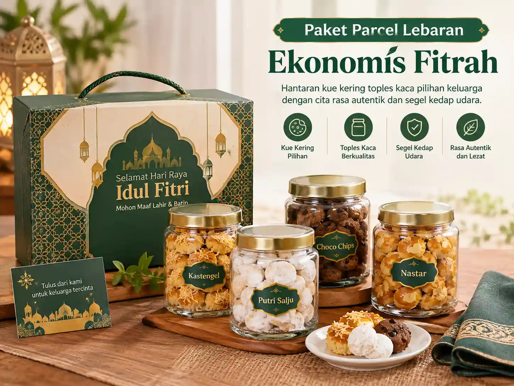

Cara memilih Vendor Parcel Lebaran yang tepat adalah dengan menilai kualitas produk, keaslian bahan baku, jenis kemasan, transparansi harga, fleksibilitas custom, batas MOQ, kecepatan komunikasi, serta keandalan sistem pengiriman sebelum melakukan transaksi. Jika Anda ingin gambaran menyeluruh tentang ekosistem pengadaan bingkisan hari raya, pelajari panduan induk kami mengenai vendor parcel Lebaran untuk kebutuhan pribadi dan perusahaan.
Apa yang Harus Diperiksa Sebelum Memilih Vendor Parcel Lebaran?
Sebelum Anda mulai berselancar di internet atau menghubungi admin penjualan, langkah paling bijak adalah merumuskan parameter kebutuhan internal Anda sendiri:
- Siapa profil penerimanya: Keluarga inti, mertua, rekan sekantor, atau klien VIP korporat?
- Berapa jumlah paket: Apakah pemesanan satuan (1–5 box) atau pengadaan divisi kantor (50–200 box)?
- Pagu anggaran: Alokasi dana bersih per paket, apakah Rp 350.000, Rp 650.000, atau Rp 850.000+?
- Kebutuhan personalisasi: Apakah memerlukan kartu ucapan cetak nama atau logo perusahaan?
- Target penerimaan: Kapan tanggal terakhir paket harus sudah sampai di tangan penerima?
Ketika Anda menghubungi pusat hampers dan parcel Lebaran dengan informasi awal yang sudah terstruktur, tim kurator dapat langsung menyodorkan proposal paket yang paling akurat tanpa proses tanya jawab yang bertele-tele.
Bagaimana Cara Mengecek Kualitas Produk Parcel?
Kualitas parcel Lebaran tidak boleh dinilai semata-mata dari kemewahan foto katalog atau pencahayaan studio. Foto dapat dipercantik, tetapi rasa dan ketahanan produk di dalamnya yang akan dirasakan langsung oleh kerabat atau relasi Anda.
Untuk produk kuliner (kue kering, biskuit, madu), periksa tiga hal esensial:
- Bahan Baku: Pastikan nastar dan kastengel menggunakan butter murni (seperti Wisman/Anchor) yang lembut, lumer di mulut, dan tidak menggunakan margarin kiloan beraroma menyengat.
- Izin Edar & Halal: Seluruh produk makanan wajib mengantongi izin edar BPOM RI atau P-IRT resmi serta sertifikat Halal MUI yang masih berlaku.
- Kedaluwarsa (Expired Date): Pastikan tanggal produksi masih segar dan masa kedaluwarsa berjarak minimal 6 hingga 12 bulan ke depan.
Sedangkan untuk item nonmakanan (seperti set cangkir keramik, sajadah travel, atau tumbler LED), tanyakan apakah vendor melakukan uji fungsi sebelum pengemasan dilakukan.

Bagaimana Membandingkan Harga Antarvendor Secara Adil?
Banyak pembeli terjebak pada angka harga termurah tanpa menyadari adanya pemangkasan spesifikasi tersembunyi. Perbandingan harga antarvendor harus dilakukan berdasarkan spesifikasi setara (apple-to-apple). Pelajari rincian komponen penyusun biaya di ulasan kami mengenai faktor harga parcel Lebaran.
Saat meminta penawaran, mintalah rincian tegas:
- Apakah harga sudah termasuk kotak hardbox magnetik atau hanya kardus lipat polos?
- Apakah sudah mencakup kartu ucapan cetak full color dan hangtag Idulfitri?
- Apakah ada biaya cetak plat logo untuk pesanan korporat?
- Bagaimana dengan biaya pengemasan bubble wrap dan ongkos kurir?
Mengapa MOQ Perlu Dicek Sejak Awal?
MOQ (Minimum Order Quantity) menentukan apakah vendor tersebut realistis untuk kebutuhan Anda. Jika Anda hanya membutuhkan 3 box untuk keluarga, jangan memilih vendor pabrikan yang menetapkan MOQ minimal 50 paket. Sebaliknya, jika Anda mewakili korporasi yang hendak memesan 150 paket, pastikan kapasitas dapur dan gudang perakitan vendor mampu menyelesaikan kuantitas tersebut tanpa menurunkan standar rasa.
Bagaimana Menilai Kemampuan Custom Branding?
Untuk pesanan kantor dan institusi, branding adalah investasi reputasi. Jangan hanya puas dengan jawaban lisan "bisa custom". Mintalah foto contoh fisik sleeve logo yang pernah dikerjakan untuk klien lain.
Tanyakan format file desain yang dibutuhkan (misalnya PDF vektor atau AI resolusi tinggi), batas revisi mockup digital, serta batas waktu final approval sebelum proses naik cetak. Anda juga dapat menelusuri katalog Parcel Korporat kami yang telah dilengkapi fasilitas free sleeve branding untuk pengadaan massal.
Bagaimana Menilai Kemampuan Pengiriman dan Logistik?
Kendala terbesar parcel Lebaran adalah kerusakan toples saat pengiriman. Nilai kesiapan ekspedisi vendor dengan menanyakan:
- Apakah kurir internal menggunakan mobil berpendingin atau motor khusus yang dilengkapi box kargo?
- Untuk pengiriman antar kota, ekspedisi kargo apa yang digandeng dan bagaimana sistem pelacakan resinya?
- Apakah ada garansi penggantian jika toples kue pecah saat diterima?
Alur logistik yang terstandarisasi dijelaskan lengkap pada artikel kami tentang tahapan pesan dan pengiriman parcel Lebaran.
Mengapa Respons Komunikasi Vendor Menjadi Kunci?
Kecepatan dan keterbukaan komunikasi mencerminkan integritas vendor. Pertumbuhan transaksi perdagangan digital di Indonesia yang dilaporkan BPS mencapai 15,30 persen pada 2024 menunjukkan tingginya ketergantungan masyarakat pada saluran komunikasi online.
Vendor yang profesional akan merespons pertanyaan dengan lugas, memberikan invoice penawaran formal dengan nomor rekening perusahaan resmi, serta proaktif mengabarkan progres perakitan bingkisan Anda.
7 Ciri Vendor Parcel Lebaran yang Layak Dipilih
- Portofolio Nyata: Memiliki dokumentasi foto riil produksi tahun-tahun sebelumnya, bukan sekadar gambar render 3D internet.
- Transparansi Bahan & Gramatur: Menjelaskan berat bersih kue dan merek butter yang digunakan.
- Legalitas & Pembayaran Jelas: Menyediakan opsi pembayaran rekening giro atas nama badan usaha resmi untuk pesanan institusi.
- Kemasan Berlapis: Menggunakan greyboard rigid tebal, toples kedap udara, dan outer carton pelindung benturan.
- SOP Pengiriman Jelas: Menjadwalkan pengiriman secara bertahap agar tidak menumpuk di hari puncak ekspedisi.
- Pilihan Paket Fleksibel: Memiliki ragam harga mulai paket spesial ekonomis hingga paket luxury premium.
- Layanan Garansi Tanggap: Memiliki kebijakan penukaran barang yang rusak tanpa membebankan pembeli.
Kesalahan yang Sering Dilakukan Saat Memilih Vendor
Kekhilafan paling sering terjadi adalah memesan pada H-5 Idulfitri saat kapasitas vendor sudah tutup buku (fully booked). Kesalahan lainnya adalah tidak memverifikasi nomor telepon penerima kado sehingga paket tertahan di gudang logistik saat sang penerima sudah mudik ke luar kota.
Pertanyaan Seputar Cara Memilih Vendor (FAQ)
Kesimpulan & Rekomendasi
Memilih vendor parcel Lebaran adalah tentang menemukan partner pengadaan yang dapat dipercaya menjaga martabat dan citra baik Anda di hadapan keluarga maupun mitra bisnis. Jangan ragu meminta sampel fisik dan rincian penawaran tertulis sebelum menyepakati pesanan.
Butuh Bantuan Menentukan Paket yang Tepat?
Konsultasikan daftar penerima dan alokasi anggaran Anda bersama tim kurasi kami. Kami siap menghadirkan pilihan bingkisan terbaik dengan jaminan kualitas dan ketepatan waktu.